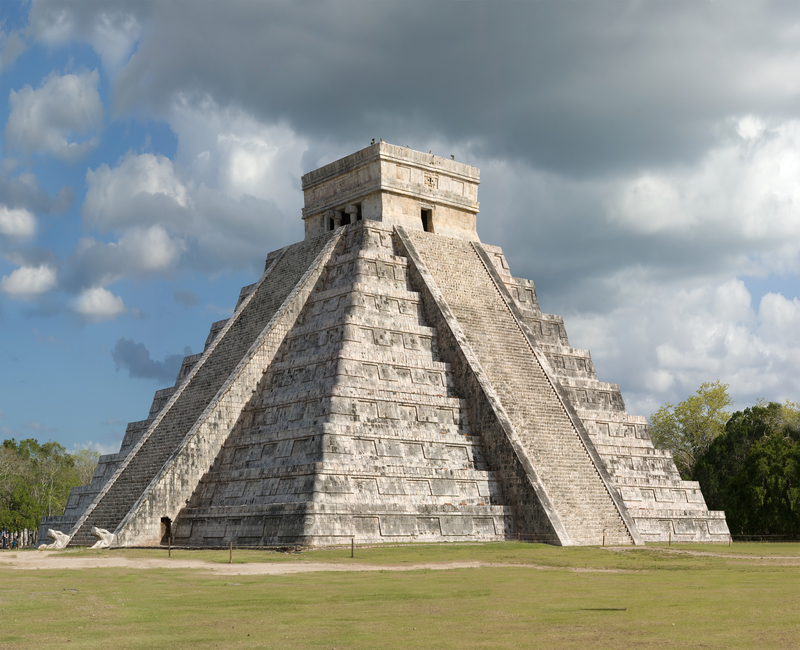
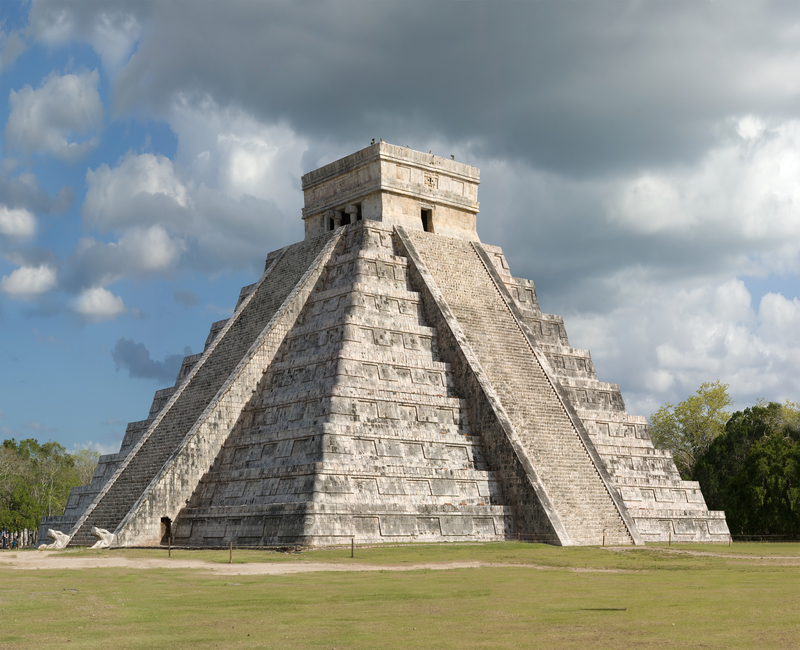

Wielki Mur
Mur rozciąga się na długości ok. 2400 km – od miejscowości Shanhaiguan nad Morzem Żółtym do miasta Jiayuguan w górach. Jest kręty, ma liczne odnogi i składa się m.in. z wielu szlaków konnych, wież obserwacyjnych, schronień i fortec o łącznej długości ponad 20 000 km.
Koloseum
Kolosuem było największym amfiteatrem w Imperium Rzymskim: wzniesione zostało na planie elipsy, a jego wysokość wynosi 57 m, obwód zaś 527 m. Pomieścić może ponad 50 tysięcy widzów (podobnie do Stadionu Narodowego w Warszawie).
Machu Picchu
Machu Picchu to najlepiej zachowane miasto kultury Inków położone ok. 100 km na północny-zachód od miasta Cuzco w południowej części Peru. Znajduje się na wysokości 2400 metrów nad poziomem morza, a jego nazwa w języku Quechua oznacza „Stary Szczyt” lub „Starą Górę”.
El Castillo
Zamek (hiszp. El Castillo) lub piramida Kukulkana – mezoamerykańska piramida schodkowa położona w centrum starożytnego miasta Chichén Itzá w Meksyku. Budowla składa się z dziewięciu platform i świątyni znajdującej się na szczycie. Łącznie mierzy 30 m wysokości oraz 55 m długości u podstawy.
Taj Mahal
Tadż Mahal, ogromne mauzoleum z białego marmuru, zbudowane zostało w Agrze w latach 1631-1648 na zlecenie szacha Jahana ku pamięci jego ulubionej żony Mumtaz Mahal. Jest klejnotem sztuki muzułmańskiej w Indiach i jednym z najlepiej znanych oraz powszechnie podziwianych arcydzieł światowej architektury.
Petra
Petra jest starożytnym miastem położonym w Jordanii. Jest to jeden z Nowych Siedmiu Cudów Świata i został wpisany na listę światowego dziedzictwa UNESCO. Miasto zostało zbudowane na skale i składa się z wielu budowli, w tym słynnego skalnego Al-Khazneh nazywanego Skarbcem Faraona.
Posąg Jezusa w Rio de Janeiro
Pomnik Chrystusa Odkupiciela w Rio de Janeiro – wysokość Statua Chrystusa Odkupiciela ma imponujące wymiary. Całkowita wysokość monumentu wynosi 38 metrów, z czego sama figura ma 30 metrów, a podstawa 8 metrów. Rozpiętość ramion sięga 28 metrów, co sprawia, że sylwetka jest doskonale widoczna z wielu punktów miasta.


 
